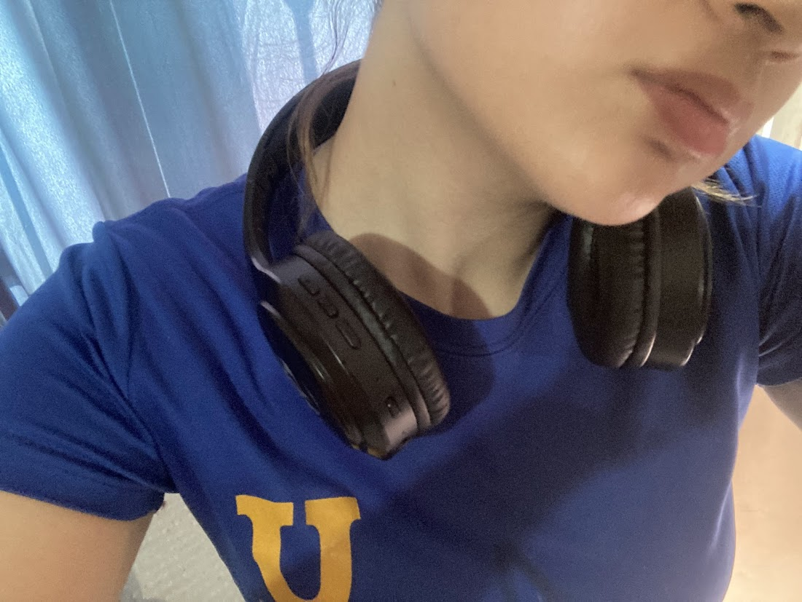
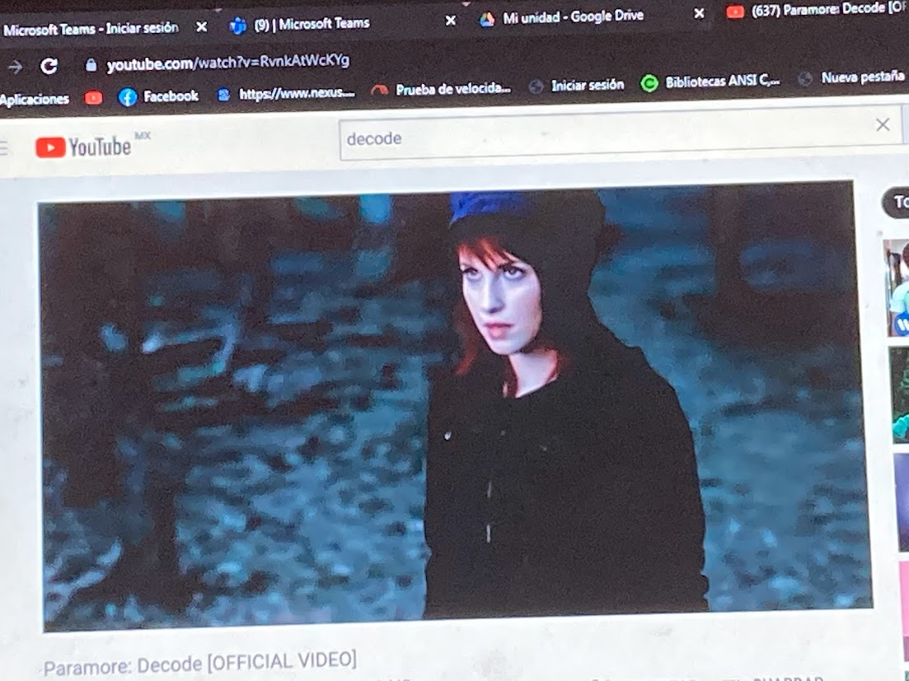
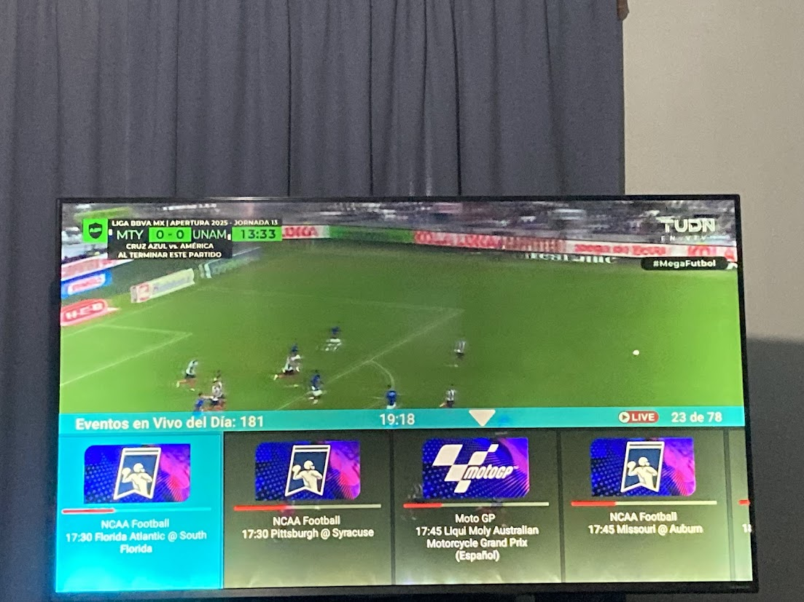
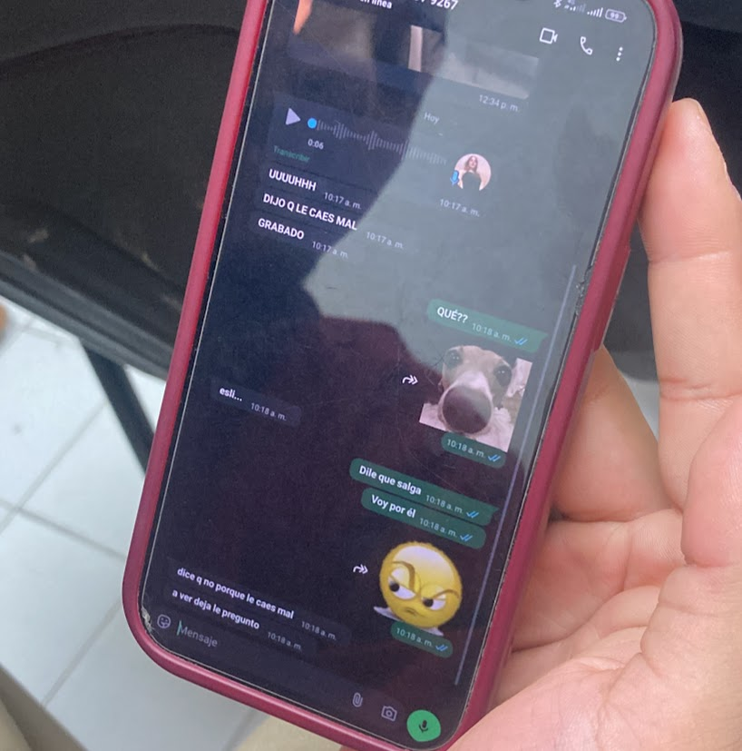

Hago ejercicio (físico)

Intento hacer entre semana
una rutina de abdomen, al menos unos 30 minutos
y, dependiendo del día, aparte hacer fuerza
con mancuernas para brazo, espalda y también pierna.
En ocasiones voy al gym y me enfoco en hacer solamente brazo
o pierna y al final cardio.
Entreno voleyball

Entreno voley entre semana,
martes y viernes, 2 horas de 7 a 9 de la tarde.
Escucho música

Normalmente, para hacer cualquier cosa,
ya sea estudiar, hacer tarea, hacer quehacer, hacer ejercicio, etc.
me pongo audifonos y escucho música.
Ver videos

Suelo ver videos de entretenimiento en:
Ver televisión

Me gusta ver series,
telenovelas y entretenimiento deportivo;
- Dexter
- Teresa
- Partidos de fútbol
Hablar con mis amigos a través de mensajes

Hablo con mis amigos todo el tiempo para contarles todo y viceversa